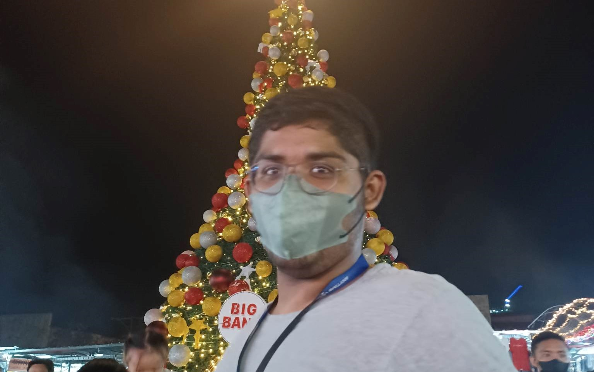

WELCOME
MAAAI
This is a project that is made my Group 3b that aims to help them with their problem, i.e. Financial Difficulties, which would help with people who are experiencing HIV and AIDS
What is MAAAI?
The institution assigned to us is called Mindanao Advocate Against AIDS Inc. (MAAAI) and the institution is all about advocating against AIDS. Based on the document provided to us by our CLE teacher, the MAAAI exists to help people combat HIV and AIDS The importance of this institution cannot be undermined because of how lethal HIV is to the human body.
Mission
Mindanao AIDS Advocates Inc. commits itself to (a) Prevent Sexually Transmitted Infection (STI), HIV and AIDS in Mindanao (b) Impower PLHIV to respond STI, HIV and AIDS issues and concerns in the community and (c) Strengthen the relationship between service providers and PLHIV in Mindanao.
Vision
Mindanao AIDS Advocates Inc. envisions a dignified, improve and sustainable quality of life for PLHIV.
What important data did you gather about the institution?
One of the important pieces of data our group was able to gather is that our partner institution (MAAAI) is experiencing financial issues for them to sustain their institution. According to a terminal report based on the OSLE/talk a previous batch had with the institution, “MAAAI needs to look for more information on ways on how to spread awareness and in the institution, there remain numerous challenges, most of these are the “financial needs for sustainability of the organization; “. The aforementioned financial difficulties MAAAI is dealing with have an impact on their capacity to further their advocacy, which is to halt the spread of AIDS and HIV. By solving this problem, it may be possible to not only meet the institution's financial demands but also keep it going so that it can continue to assist more and more individuals in the future.
How did you gather this data?
We were able to gather this piece of data along with a few other pieces by obtaining a terminal report a previous Grade 9 batch did about their OSLE/talk with MAAAI. This was our only source of this type of information because we were unable to have our own OSLE/talk with our partner institution this year.
Why do you find this data important as you continue your research?
Our group found this data important because it talks about a major issue that can put the future of the institution in jeopardy. Without the appropriate financial assistance, the institution might fail to sustain itself which will cause them to shut down. If the institution somehow shuts down, many people with HIV/AIDS would be affected because a few hundred, maybe even thousands of HIV/AIDS patients heavily rely on MAAAI for treatment against their illness.
What information about the institution did your group find interesting? Explain.
What our group found interesting about our institution the MAAAI is how it was able to survive the Pandemic with its financial difficulty to start with. As we did our research of MAAAI due to the fact that they were unreachable when we asked for questions through emails and making us unable to do our OSLE, we noticed with the help of their website that they added more information about COVID-19 in their website as well as hosting vaccination drives. They have tried to keep everyone informed of the current situation, the safety guidelines we must follow in the pandemic and how contracting COVID-19 does not affect or make your HIV case any worse. We often think that because this institution only advocates for this certain problem they don’t adapt but looking at what MAAAI has done they have tried to keep up with the current situation and is doing its best just like the rest of us to be able to recover from this pandemic.
How do you ensure that the data you gathered are reliable and valid?
We can ensure that the data that we gathered is reliable and valid by making sure that they personally come from our partnered institution. This is based on our experience where we had to email the MAAAI community that enabled us to achieve the information that we have from the representatives of the MAAAI community themselves. This tells us that having the opportunity of being able to talk with the MAAAI’s representative to ask our questions regarding their lifestyle, and needs helped us to make sure that our information or data about them are valid. We also did extensive research and was able to find their official website and facebook page.
How do you think your geometry learnings help you in your ET3/PT as a reflective problem-solver?
We believe that the ability to calculate our activities, manage our finances, and stay organized benefited us in our ET3/PT as reflective problem solvers. This is based on our own experience, where gaining math skills allowed us to handle problems that were useful in our everyday life, such as keeping track of money for various forms of payments on our supplies and other expenses. This demonstrates how the geometry knowledge we applied to our jobs aided us in calculating and organizing our actions, which enabled us to solve reflective problems.
To what extent does data gathering in your research reflect yourself as an Atenean?
Our ET 3 in Math and other ET’s as well with MAAAI that involves a lot of Data Gathering through research just shows that as Ateneans, we are able to gain a new perspective in the ways of life of not only ourselves but for others as well. Looking at MAAAI’s official website and seeing them make measures for their patients and for others as well to help strive in the Pandemic that’d be giving out vaccine shots to others and many more examples. This in a way encourages us to not be limited by the problems that surround us and still continue to help others, we must not be discouraged in being helpful to others because it is only when we help each other and unite as one that we could achieve great things. This makes us grateful as well to those people who have been there for us and helped us through all our struggles because it is through them that we have made it this far. Now all of this, drives us Ateneans to be there for other to help in any way we can because if others can do it, why can’t we.
At first glance you may think of me as a "shy, quiet, pushover pretty girl whose smart" but no, I'm the complete opposite babes. My name is Mesha Alimasag, loved by all, except for those people with no taste. I'm a loud, sarcastic, narcissistic, pretty, petty, cautious and I like to think of myself also as a smart girl (sure some of u can agree). I do competative swimming as a sport and I take it seriously even though attending trainings every single day is a hassle. I most likely got the biggest ego in the group but I remain humble (hehe ;3). You may not know but I am actually married to my both of my babes, Laurynie and Jannaur. I love them but I love myself more (jk I actually do love them). One fact about me is my love language is receiving gifts, so yk, if you like, you could, yk, give me gifts if you'd like ehehe. My description is longer than the rest of my groupmates because we're explaining about me here, it was hard enough to sum it up in 7 words so deal with it.

This is Aaryan or a.k.a “Khal”. He considered as “The Great” by some of his classmates. He likes to play video games and sports. He even grew up in Saudi but can speak Tagalog fluently. And let’s not forget about his 6 ft. height that matches his ego.
Here we have Antonio, a Disciplinary officer in his class with his groupmate Jelena Pido (Both absolutely qualified for the job). He is into sports and other activities which involve the great outdoors. A known businessman in the class as well with his two business partners in supplying internet to his fellow classmates. Though he may not be 6 ft like Aaryan, he’s got the ego of one (maybe more).
This is Jelena Pido, but people call her Lena or Pido. Jelena plays football and takes it seriously. Aside from football, Jelena loves 2 things: The Weeknd and The Weekend. Jelena is the youngest in her family and acts like the youngest in the group. Jelena is an introvert but is an extrovert with the people she loves.

She is Joanna Diane S. Coraje. She is from Grade 9 St. John Berchmans. Her birthdate is on August 15 2008 and she is currently 14 years old. She has an older brother and she is the youngest in their family.